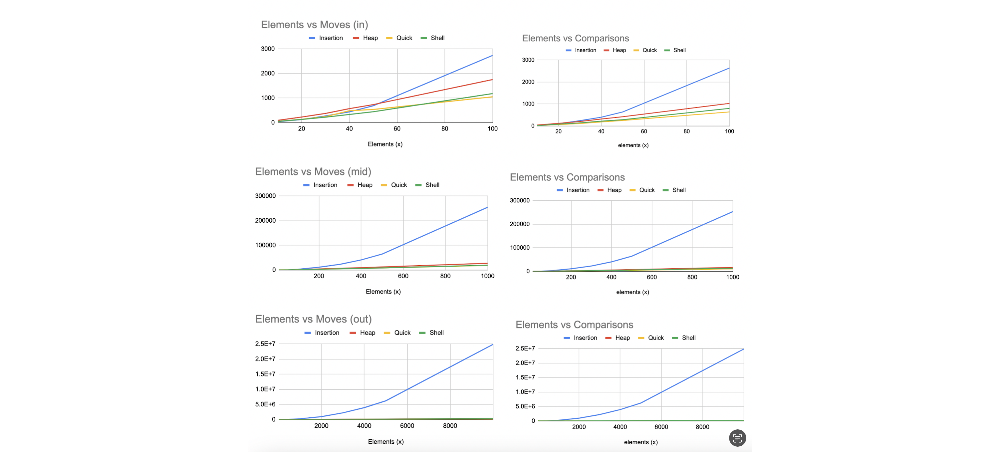

Sort Algorithms
Overview
In this assignment we were tasked with creating 4 different sorting algorithms and a dynamically allocated array of pseudo randomly generated numbers to test each with.
Insert Sort
Insertion sort compares each element of the array to the preceding element counting down from the length until 0. It simply checks whether the element is in the right place by checking the element preceding it in the array.
Shell Sort
The shell sort algorithm uses the ideas of the gap sequence and the fact that any gap sequence that ends with a gap of 1 has produced a sorted array. There are multiple different sequence caps but we are using Knuths, ùëÇ(ùëõ^3/2). A generator is also replicated in Shell by setting a static variable equal to the max and creating a static variable called first run. first_run is false on start, but once the function runs it's true for all remaining calls.
Heap Sort
Heap sort mimics data into a binary tree checking if any of the parents, or numbers above, are greater. If they are, it switches and re-builds the heap.
Quick Sort
Quick sort uses a partition to split the array with a pivot. Elements less than the pivot go to a sub array of numbers on the left and elements greater than the pivot go to a sub array on the right. The quick sort function initializes a recursive function, quick_sorter, which continues to run until the sort is complete.
Analysis
Graphing the elements run vs moves and comparisons gives a much clearer picture of the efficiency in which these algorithms run. The moves and comparisons graphs on top, representing a range of 100 elements, show a competitive change of rate between the sort algorithms. At around 50 elements, insert beings to noticeably increase moves and comparisons, much faster than the other three algorithms. In the middle moves and comparisons graphs, with a range representing 1000, insert is clearly preformming many more moves and comparisons. At this number of elements, heap also performs a noticeable amount more moves and comparisons than insert and quick. On the last graph, with a range of 10000, insert performs significantly worse than the other three algorithms.
It’s clear from the graphs that insert runs much more moves and comparisons in order to sort the elements. One reason for this is that insert sort has to check the element's validity one by one for the length of the array. Insert works at a close rate as the other algorithms on small numbers, but as the number of elements grows, its usefulness decreases.
Sources
Sort Cover Image: https://www.geeksforgeeks.org/recursive-insertion-sort/